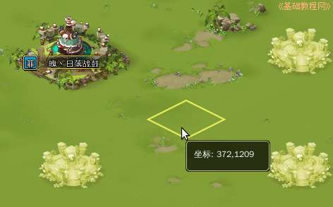
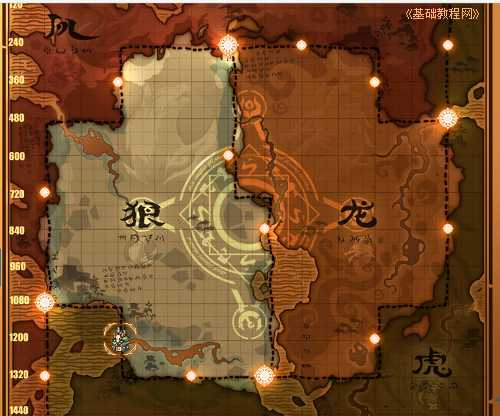

塔防游戏部落守卫战新手攻略
作者：TeliuTe 来源：基础教程网
二十三、地图查看周围部落 返回目录 下一课通过地图可以查看周边的环境，选择合适的发展地点；
1、地图
1）在右上角找到地图按钮，点击进入，也可以点击一个酋长名，在出来的坐标上点击；
2）在出来的地图窗口中间，就是自己的部落，同时显示了部落大小，是酋长等级的四倍；
3）在窗口右上角，有一个“回城”按钮，点击就可以返回原来的大厅；
4）在右上边有一个圆形的雷达图，里面显示了当前区域的部落情况，一个亮点代表一个部落，方块是当前光标位置；
5）左边有三个按钮，分别是“显示势力范围、我的城池、建城点”，如果找不到自己的部落时，点一下中间的就可以立即回到自己的城池；

6）右上角有两个坐标输入框，分别是横坐标和纵坐标，知道一个酋长的坐标，直接输入后点右边的“OK”，就可以快速找到他；
7）上边还有一个“世界地图”，点击可以查看全部四个国家的地理情况；
8）地图中最大的亮点是神迹、小一点的是中庙，都是兵家必争之地，可以根据它们的分布来调配整个联盟部落的兵力部署；

本节学习了地图的基础知识，如果你成功地完成了练习，请继续学习下一课内容；
本教程由86团学校TeliuTe制作|著作权所有
基础教程网：http://teliute.org/
美丽的校园……
转载和引用本站内容，请保留作者和本站链接。